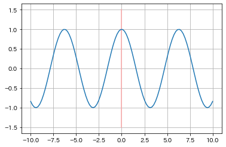
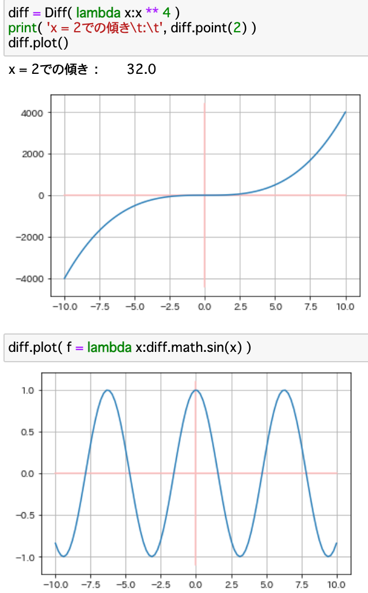

▲
top
top
Pythonで微分した値を求めてプロットしたい
微分した値と、導関数のプロット
完成したコードまで読み飛ばす
まず微分の定義通りに関数diff()を書いた。
def diff( f, x ):
d = 1e-10 # 0に近い数字
keta = 5 # 出力する小数点以下の桁数
return (( f(x+n) - f(x) )/d) // 10**(-1*keta) / 10**keta
d = 1e-10 # 0に近い数字
keta = 5 # 出力する小数点以下の桁数
return (( f(x+n) - f(x) )/d) // 10**(-1*keta) / 10**keta
これは引数 f に関数かラムダ式を、x に数値を入力すると微分した際の傾きの数値を戻す関数だ。
この関数に式と適当な範囲での数値を入れてプロットすれば導関数のグラフが描けるはずである。
では実際に f(x) = x^3 の場合を試してみる。実行するコードは下記だ。
import numpy as np, matplotlib.pyplot as plt
def diff( f, x ):
d = 1e-10
keta = 5
return int((( f(x+n) - f(x) )/d) // 10**(-1*keta)) / 10**keta
for_range = np.linspace(-10, 10, 100)
xs, ys = [], []
for i in for_range:
xs.append( i )
ys.append( diff( lambda x:x**3, i ) )
plt.grid()
plt.plot( xs, ys )
def diff( f, x ):
d = 1e-10
keta = 5
return int((( f(x+n) - f(x) )/d) // 10**(-1*keta)) / 10**keta
for_range = np.linspace(-10, 10, 100)
xs, ys = [], []
for i in for_range:
xs.append( i )
ys.append( diff( lambda x:x**3, i ) )
plt.grid()
plt.plot( xs, ys )
実行結果は、

x^3の導関数は3x^2であるので良さそうだ。ついでに f(x) = sin(x) で実行してみると、

con(x)になっているのがわかる。
最後にクラスを使って一般化する。
プログラム全文
class Diff:
import numpy as np, matplotlib.pyplot as plt, math
def __init__( self, f=None ):
self.f = None if ( f == None ) else f
def point( self, x, d=1e-10, keta=5, f=None ):
f_new = self.f if ( f == None ) else f
return (( f_new(x+d) - f_new(x) )/d) // 10**(-1*keta) / 10**keta
def plot( self, f=None ):
f_new = self.f if ( f == None ) else f
for_range = self.np.linspace(-10, 10, 100)
xs, ys = [], []
for i in for_range:
xs.append( i )
ys.append( self.point( i, f=f_new ) )
self.plt.grid()
self.plt.plot( [0, 0], [-1.1*max(ys), 1.1*max(ys)], c='#ffbbbb' )
self.plt.plot( [-10, 10], [0, 0], c='#ffbbbb' )
self.plt.plot( xs, ys )
import numpy as np, matplotlib.pyplot as plt, math
def __init__( self, f=None ):
self.f = None if ( f == None ) else f
def point( self, x, d=1e-10, keta=5, f=None ):
f_new = self.f if ( f == None ) else f
return (( f_new(x+d) - f_new(x) )/d) // 10**(-1*keta) / 10**keta
def plot( self, f=None ):
f_new = self.f if ( f == None ) else f
for_range = self.np.linspace(-10, 10, 100)
xs, ys = [], []
for i in for_range:
xs.append( i )
ys.append( self.point( i, f=f_new ) )
self.plt.grid()
self.plt.plot( [0, 0], [-1.1*max(ys), 1.1*max(ys)], c='#ffbbbb' )
self.plt.plot( [-10, 10], [0, 0], c='#ffbbbb' )
self.plt.plot( xs, ys )
point()が微分した値の計算で、plot()が導関数のプロットを行う関数である。ここではより使いやすいようにpoint()やplot()関数に直接式を入れても機能するようにしてある。
実際にjupyter notebookにて実行する。

にっきのページに戻る